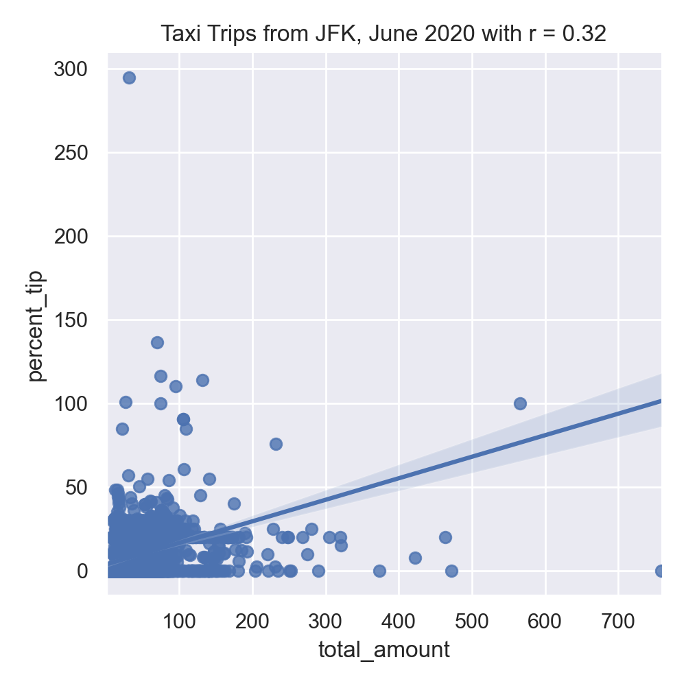
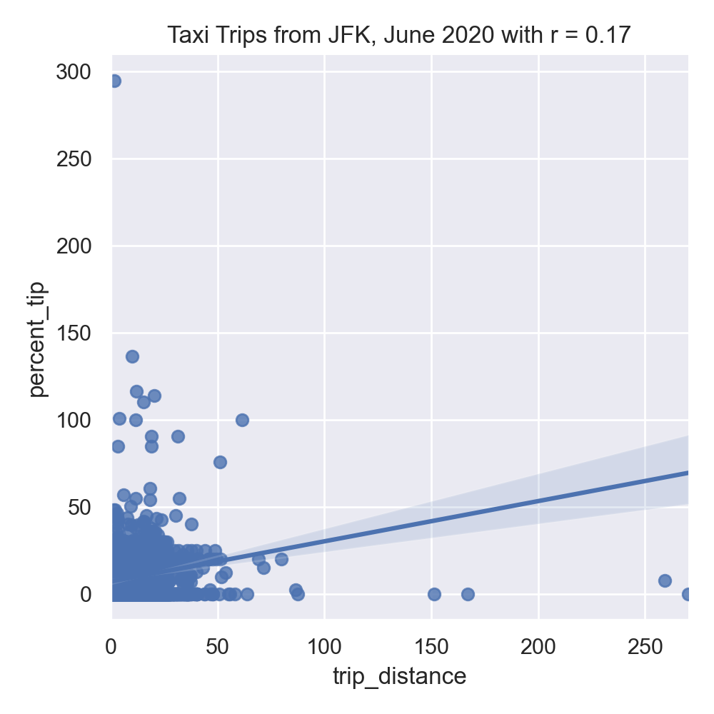

Program 6: Taxi Tips
CSci 39542: Introduction to Data Science
Department of Computer Science
Hunter College, City University of New York
Spring 2023
Classwork Quizzes Homework Project
Program Description
Program 6: Taxi Tips. Due 10am, Wednesday, 8 March.
This program is tailored to the NYC OpenData Yellow Taxi Trip Data and follows astandard strategy for data cleaning and model building of:
Learning Objective: give students practice on implementing model from start to finish and to strengthen understanding of model drift.
Available Libraries: pandas, numpy, datetime, pickle, sklearn, and core Python 3.6+.
Data Sources: Yellow Taxi Trip Data and NYC Taxi Zones from OpenData NYC.
Sample Datasets: taxi_new_years_day_2020.csv,
taxi_4July2020.csv,
taxi_jfk_june2020.csv, and
taxi_zones.csv.

This program will focus on building a linear regression model on the features of our dataset to predict tip percentages.
The function specifications are:
-
import_data(file_name):This function takes as one input parameter:-
file_name: the name of a CSV file containing Yellow Taxi Trip Data from OpenData NYC.
- the columns:
VendorID,RatecodeID,store_and_fwd_flag,payment_type,extra,mta_tax,tolls_amount,improvement_surcharge,congestion_surchargeare dropped. - Any rows with non-positive
total_amountare dropped.
-
-
add_tip_time_features(df):This function takes one input:-
df: a DataFrame containing Yellow Taxi Trip Data from OpenData NYC.
percent_tip: which is100*tip_amount/(total_amount-tip_amount)duration: the time the trip took in seconds.dayofweek: the day of the week that the trip started, represented as 0 for Monday, 1 for Tuesday, ... 6 for Sunday.
-
-
impute_numeric_cols(df):This function takes one input:-
df: a DataFrame containing Yellow Taxi Trip Data from OpenData NYC.
passenger_count,trip_distance,fare_amount,tip_amount,total_amount,duration,dayofweekare replaced with the median of the respective column.
Returns the resulting DataFrame. -
-
add_boro(df, file_name) -> pd.DataFrame:This function takes as two input parameters:-
df: a DataFrame containing Yellow Taxi Trip Data from OpenData NYC. -
file_name: the name of a CSV file containing NYC Taxi Zones from OpenData NYC.
file_name, to add pick up and drop off boroughs todf. In particular, adds two new columns to thedf:-
PU_boroughthat contain the borough corresponding to the pick up taxi zone ID (stored inPULocationID), and -
DO_boroughthat contain the borough corresponding to the drop off taxi zone (stored inDOLocationID)
dfwith these two additional columns (PU_boroughandDO_borough). -
-
encode_categorical_col(col,prefix):This function takes two input parameters:-
col: a column of categorical data. -
prefix: a prefix to use for the labels of the resulting columns.
prefixparameter has the value 'PU_' (and set the separators to be the empty string:prefix_sep=''), then the resulting columns would be labeled: 'PU_Bronx', 'PU_Brooklyn', 'PU_Manhattan', 'PU_Queens', and 'PU_Staten Island'. The last one alphabetically is dropped (in this example, 'PU_Staten Island'), and the DataFrame restricted to the first k-1 columns is returned.
Note: we presented several different ways to categorically encode nomial data in Lecture 5. The book details an approach using sklearn in Chapter 15, and you may find Panda's get_dummies useful. -
-
split_test_train(df, xes_col_names, y_col_name, test_size=0.25, random_state=1870):This function takes 5 input parameters:-
df: a DataFrame containing Yellow Taxi Trip Data from OpenData NYC to whichadd_boro()has been applied. -
y_col_name: the name of the column of the dependent variable. -
xes_col_names: a list of columns that contain the independent variables. -
test_size: accepts a float between 0 and 1 and represents the proportion of the data set to use for training. This parameter has a default value of 0.25. -
random_state: Used as a seed to the randomization. This parameter has a default value of 1870.
Hint: see the examples from Lecture 4 for a similar splitting of data into training and testing datasets. -
-
fit_linear_regression(x_train, y_train)This function takes two inputs:-
x_train: an array of numeric columns with no null values. -
y_train: an array of numeric columns with no null values.
x_trainandy_train, usingsklearn.linear_model.LinearRegression(see lecture & textbook for details on setting up the model). The resulting model should be returned as bytestream, using pickle (see Lecture 4). -
-
predict_using_trained_model(mod_pkl, xes, yes):This function takes three inputs:-
mod_pkl: a trained model for the data, stored in pickle format. -
xes: an array or DataFrame of numeric columns with no null values. -
yes: an array or DataFrame of numeric columns with no null values.
mod_pklonx) and the actual values (y). Note thatsklearn.metricscontains two functions that may be of use:mean_squared_errorandr2_score. -
For example, the file, taxi_jfk_june2020.csv, contains all taxi trips, starting from JFK in June 2020 Yellow Taxi Trip Data (about 9,500 entries) with the first lines are:
VendorID,tpep_pickup_datetime,tpep_dropoff_datetime,passenger_count,trip_distance,RatecodeID,store_and_fwd_flag,PULocationID,DOLocationID,payment_type,fare_amount,extra,mta_tax,tip_amount,tolls_amount,improvement_surcharge,total_amount,congestion_surcharge
2,06/01/2020 12:00:31 AM,06/01/2020 12:31:43 AM,1,12.59,1,N,132,189,2,37,0.5,0.5,0,0,0.3,38.3,0
2,06/01/2020 12:05:23 AM,06/01/2020 12:29:05 AM,1,15.8,1,N,132,255,1,42,0.5,0.5,8.66,0,0.3,51.96,0
2,06/01/2020 12:06:27 AM,06/01/2020 12:36:26 AM,1,18.19,2,N,132,142,1,52,0,0.5,10,0,0.3,65.3,2.5
2,06/01/2020 12:08:48 AM,06/01/2020 12:40:48 AM,2,19,2,N,132,113,1,52,0,0.5,13.82,0,0.3,69.12,2.5
2,06/01/2020 12:13:46 AM,06/01/2020 12:25:29 AM,1,7.21,1,N,132,134,2,21,0.5,0.5,0,0,0.3,22.3,0
df = import_data('taxi_jfk_june2020.csv')
df = add_tip_time_features(df)
print(df[ ['trip_distance','duration','dayofweek','total_amount','percent_tip'] ].head() ) trip_distance duration dayofweek total_amount percent_tip
0 12.59 1872.0 0 38.30 0.000000
1 15.80 1422.0 0 51.96 20.000000
2 18.19 1799.0 0 65.30 18.083183
3 19.00 1920.0 0 69.12 24.990958
4 7.21 703.0 0 22.30 0.000000We can impute the missing data in numerical columns with their median value. For example:
print(df[ ['passenger_count','trip_distance'] ].head(10) )
df = impute_numeric_cols(df)
print( df[ ['passenger_count','trip_distance'] ].head(10) )passenger_count the results of impute_numeric_cols:
passenger_count trip_distance
0 1.0 12.59
1 1.0 15.80
2 1.0 18.19
3 2.0 19.00
4 1.0 7.21
5 1.0 6.50
6 2.0 13.90
7 NaN 0.00
8 NaN 0.00
9 NaN 0.00
passenger_count trip_distance
0 1.0 12.59
1 1.0 15.80
2 1.0 18.19
3 2.0 19.00
4 1.0 7.21
5 1.0 6.50
6 2.0 13.90
7 1.0 0.00
8 1.0 0.00
9 1.0 0.00The running example in the textbook focuses on predicting restaurant tips. A highly correlated feature with tips for restaurant meals is the total bill. Let's look at the taxi data set to see if a similar correlation is suggested for tips on yellow taxi trips:
#Explore some data:
import matplotlib.pyplot as plt
import seaborn as sns
sns.set_theme(color_codes=True)
sns.lmplot(x="total_amount", y="percent_tip", data=df)
tot_r = df['total_amount'].corr(df['percent_tip'])
plt.title(f'Taxi Trips from JFK, June 2020 with r = {tot_r:.2f}')
plt.tight_layout() #for nicer margins
plt.show()
sns.lmplot(x="trip_distance", y="percent_tip", data=df)
dist_r = df['trip_distance'].corr(df['percent_tip'])
plt.title(f'Taxi Trips from JFK, June 2020 with r = {dist_r:.2f}')
plt.tight_layout() #for nicer margins
plt.show()The resulting images:
 
Neither total amount or distance of the trip are strongly correlated, suggesting a linear regression model with a single input will not make a good predictor.
Next, let's use our new functions to add in boroughs for the pick up and drop off locations
df = add_boro(df,'taxi_zones.csv')
print('\nThe locations and borough columns:')
print(f"{df[['PULocationID','PU_borough','DOLocationID','DO_borough']]}")which prints out the new columns:
The locations and borough columns:
PULocationID PU_borough DOLocationID DO_borough
0 132 Queens 189 Brooklyn
1 132 Queens 255 Brooklyn
2 132 Queens 142 Manhattan
3 132 Queens 113 Manhattan
4 132 Queens 134 Queens
... ... ... ... ...
9495 132 Queens 36 Brooklyn
9496 132 Queens 263 Manhattan
9497 132 Queens 132 Queens
9498 132 Queens 75 Manhattan
9499 132 Queens 249 Manhattan
[9500 rows x 4 columns]df_do = encode_categorical_col(df['DO_borough'],'DO_')
print(df_do.head())The first few lines of the resulting DataFrames:
DO_Bronx DO_Brooklyn DO_EWR DO_Manhattan DO_Queens
0 0 1 0 0 0
1 0 1 0 0 0
2 0 0 0 1 0
3 0 0 0 1 0
4 0 0 0 0 1Let's combine all the DataFrames into one (using concat along column axis):
df_all = pd.concat( [df,df_do], axis=1)
print(f'The combined DataFrame has columns: {df_all.columns}')The combined DataFrame has the columns:
The combined DataFrame has columns: Index(['tpep_pickup_datetime', 'tpep_dropoff_datetime', 'passenger_count',
'trip_distance', 'PULocationID', 'DOLocationID', 'fare_amount',
'tip_amount', 'total_amount', 'percent_tip', 'duration',
'dayofweek', 'PU_borough', 'DO_borough', 'DO_Bronx', 'DO_Brooklyn',
'DO_EWR', 'DO_Manhattan', 'DO_Queens'],
dtype='object')df_all = impute_numeric_cols(df_all)
num_cols = ['passenger_count','trip_distance','fare_amount',\
'tip_amount', 'total_amount', 'percent_tip', 'duration','dayofweek',\
'PU_borough', 'DO_borough', 'DO_Bronx', 'DO_Brooklyn','DO_EWR',\
'DO_Manhattan', 'DO_Queens']With the missing numeric data imputed, we can fit the model on training sets (of size 25%):
x_train,x_test,y_train,y_test = split_test_train(df_all,num_cols, 'percent_tip')
print('For numeric columns, training on 25% of data:')
mod_pkl = fit_linear_regression(x_train,y_train)
mod = pickle.loads(mod_pkl)
print(f'intercept = {mod.intercept_} and coefficients = {mod.coef_}')
tr_err,tr_r2 = predict_using_trained_model(mod_pkl, x_train,y_train)
print(f'training: RMSE = {tr_err} and r2 = {tr_r2}.')
test_err,test_r2 = predict_using_trained_model(mod_pkl, x_test,y_test)
print(f'testing: RMSE = {test_err} and r2 = {test_r2}.')the resulting model does a reasonable both with the training and testing data sets that we used to validate the model:
For numeric columns, training on 25% of data:
intercept = -4.796163466380676e-14 and coefficients = [ 5.23397910e-17 1.61192577e-15 1.85687045e-16 -5.56734918e-17
-2.61963848e-16 1.00000000e+00 1.31317482e-17 1.22153806e-16
-1.72760552e-15 2.32202615e-16 -9.61810652e-17 -3.20366914e-17
-5.19491682e-17]
training: RMSE = 1.7731188666093563e-27 and r2 = 1.0.
testing: RMSE = 2.2870524510872717e-27 and r2 = 1.0.Let's do the same with just two of the columns:
x_train,x_test,y_train,y_test = split_test_train(df_all,num_cols, 'percent_tip')
print('For numeric columns, training on 25% of data:')
mod_pkl = fit_linear_regression(x_train,y_train)
mod = pickle.loads(mod_pkl)
print(f'intercept = {mod.intercept_} and coefficients = {mod.coef_}')
tr_err,tr_r2 = predict_using_trained_model(mod_pkl, x_train,y_train)
print(f'training: RMSE = {tr_err} and r2 = {tr_r2}.')
test_err,test_r2 = predict_using_trained_model(mod_pkl, x_test,y_test)
print(f'testing: RMSE = {test_err} and r2 = {test_r2}.')the resulting model does a reasonable both with the training and testing data sets that we used to validate the model:
For ['duration','total_amount'], training on 25% of data:
intercept = -4.796163466380676e-14 and coefficients = [ 5.23397910e-17 1.61192577e-15 1.85687045e-16 -5.56734918e-17
-2.61963848e-16 1.00000000e+00 1.31317482e-17 1.22153806e-16
-1.72760552e-15 2.32202615e-16 -9.61810652e-17 -3.20366914e-17
-5.19491682e-17]
training: RMSE = 117.29525461464237 and r2 = 0.09393010147197978.
testing: RMSE = 106.48541736076493 and r2 = 0.12955509236760188.Neither does very well, compared to using all the possible columns.
We can use the model for other yellow taxi data sets to see how well our model does:
print(f'Prediction for 4 July data with only duration and total amount:')
df_july = import_data('program06/taxi_4July2020.csv')
df_july = add_tip_time_features(df_july)
df_july = impute_numeric_cols(df_july)
print(df_july[['duration','total_amount']])
july_err,july_r2 = predict_using_trained_model(mod2_pkl, df_july[['duration','total_amount']].to_numpy(),df_july['percent_tip'])
print(f'RMSE = {july_err} and r2 = {july_r2}.')The restricted model does not do well with the other data set:
Prediction for 4 July data:
RMSE = 441.3910670031561 and r2 = -0.060720824296001785.
While the full model does quite well predicting results for other data sets:
print(f'Prediction for 4 July data with full model:')
df_july = add_boro(df_july,'program06/taxi_zones.csv')
df_do_j = encode_categorical_col(df_july['DO_borough'],'DO_')
df_all_j = pd.concat( [df_july,df_do_j], axis=1)
july_err,july_r2 = predict_using_trained_model(mod_pkl, df_all_j[num_cols].to_numpy(),df_all_j['percent_tip'])
print(f'RMSE = {july_err} and r2 = {july_r2}.')Prediction for 4 July data with full model:
RMSE = 3.2743379800535055e-27 and r2 = 1.0.
Notes and Hints:
- You should submit a .py file with only the standard comments at the top, the specified functions, and any helper functions you have written. The grading scripts will then import the file for testing. If your file includes code outside of functions, either comment the code out before submitting or use a main function that is conditionally executed (see Think CS: Section 6.8 for details).
- Include only the libraries you need (such as
pandas) for your functions and none of the ones for plotting (such asmatplotlib.pyplotandseaborn) since the functions submitted are computing and not plotting. Only the libraries listed in Available Libraries are loaded by the autograder. - See Lecture 3 or DS 100: Section 9.4 for working with dates and times.